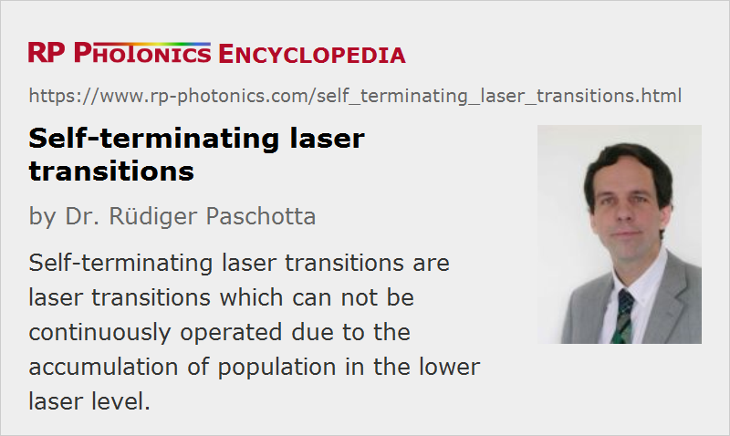

Self-terminating Laser Transitions
Definition: laser transitions which can not be continuously operated due to the accumulation of population in the lower laser level
More general term: laser transitions
How to cite the article; suggest additional literature
Author: Dr. Rüdiger Paschotta
Some solid-state gain media have laser transitions where the lower laser level is metastable and has a long lifetime – even longer than the upper-state lifetime. An example of this situation is the 2.7-μm transition (4I11/2 → 4I13/2) of erbium (Er3+) in fluoride fibers. Here, neither multi-phonon transitions nor the pump radiation can depopulate the lower laser level. In that case, the laser transition is usually self-terminating: lasing is possible only for a short while, until the lower level is so strongly populated that a population inversion is no longer possible. After that, the gain medium requires some time without pumping, until lasing can be restarted.
Sometimes it is possible to cure that problem with some additional dopant which can quench the population of the lower laser level by means of an energy transfer. In the above-mentioned case, praseodymium (Pr3+) codoping has proven to be a good solution [2, 3]. An alternative, but less successful solution is to use a high erbium doping concentration [1]. This introduces various cross-relaxation processes, which can depopulate the lower laser level but also affect the upper-state population. Also, it is sometimes possible to arrange for cooperative lasing from the lower laser level to a still lower energy level.
Self-terminating transitions can also occur with gas lasers, e.g. in nitrogen lasers.
Questions and Comments from Users
Here you can submit questions and comments. As far as they get accepted by the author, they will appear above this paragraph together with the author’s answer. The author will decide on acceptance based on certain criteria. Essentially, the issue must be of sufficiently broad interest.
Please do not enter personal data here; we would otherwise delete it soon. (See also our privacy declaration.) If you wish to receive personal feedback or consultancy from the author, please contact him e.g. via e-mail.
By submitting the information, you give your consent to the potential publication of your inputs on our website according to our rules. (If you later retract your consent, we will delete those inputs.) As your inputs are first reviewed by the author, they may be published with some delay.
Bibliography
| [1] | E. Poppe et al., “980 nm diode-pumped continuous wave mid-IR (2.7 μm) fiber laser”, Electron. Lett. 34, 2331 (1998), doi:10.1049/el:19981582 |
| [2] | B. Srinivasan et al., “High-power 'watt-level' CW operation of diode-pumped 2.7 μm fiber lasers using efficient cross-relaxation and energy transfer mechanisms”, Opt. Express 4 (12), 490 (1999), doi:10.1364/OE.4.000490 |
| [3] | S. D. Jackson et al., “Diode-pumped 1.7-W erbium 3-μm fiber laser”, Opt. Lett. 24 (16), 1133 (1999), doi:10.1364/OL.24.001133 |
See also: laser transitions, lower-state lifetime, upper-state lifetime, cooperative lasing, quenching, gain media, solid-state lasers
and other articles in the category lasers
|  |
If you like this page, please share the link with your friends and colleagues, e.g. via social media:
These sharing buttons are implemented in a privacy-friendly way!